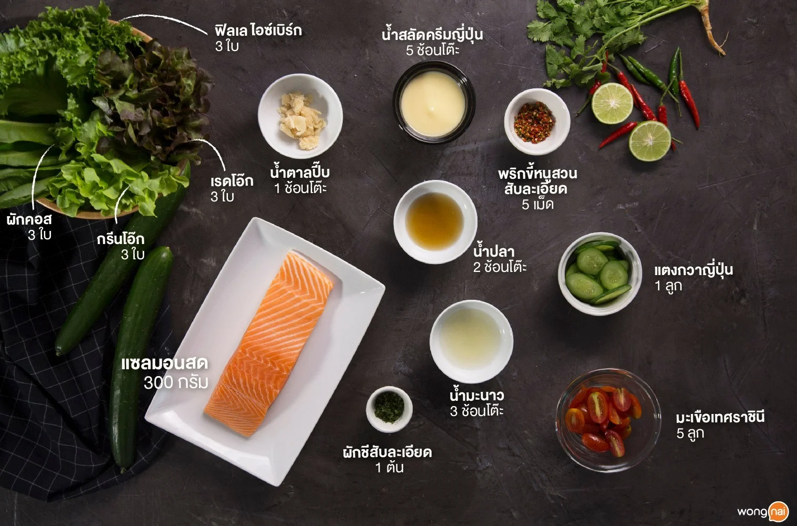
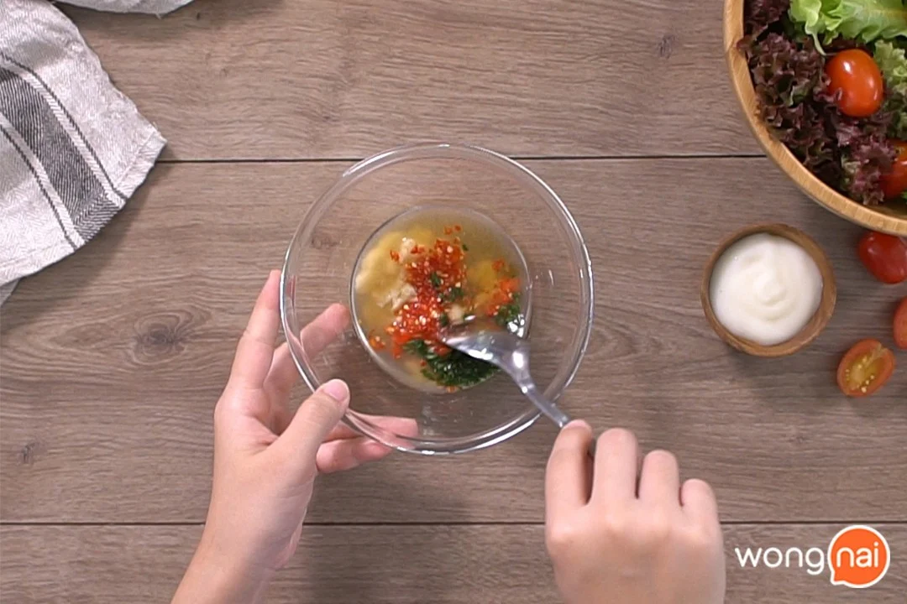
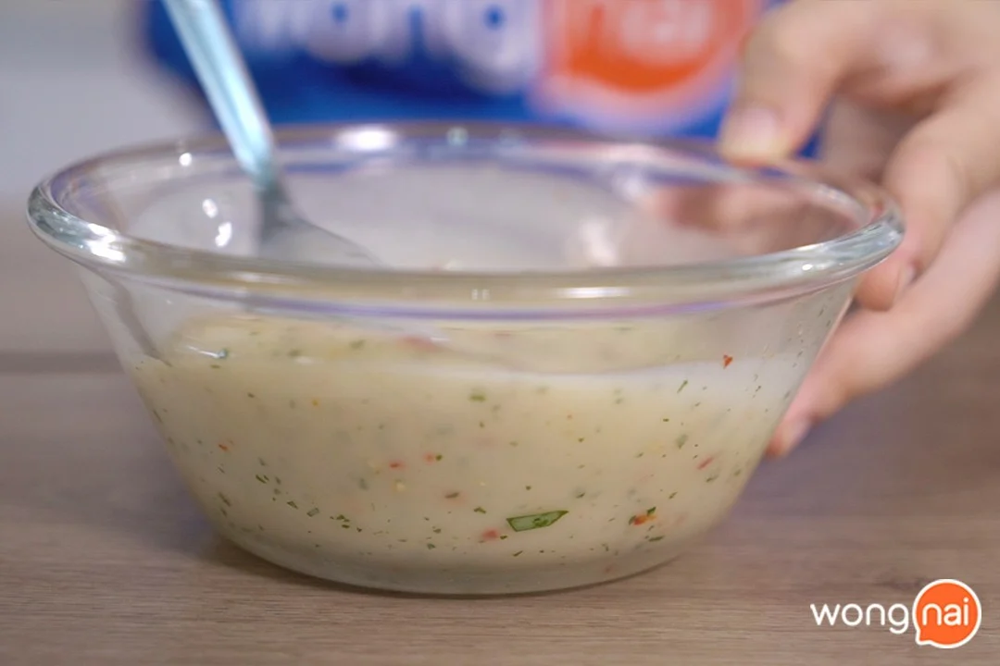
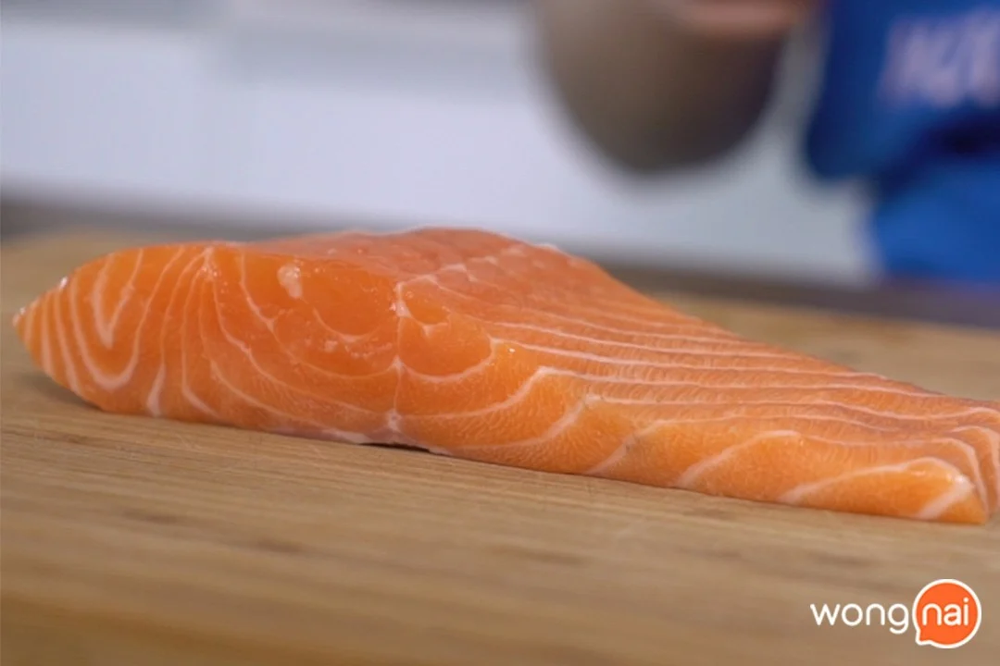
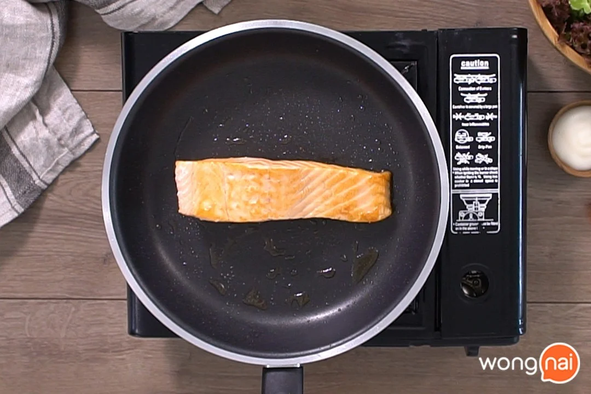
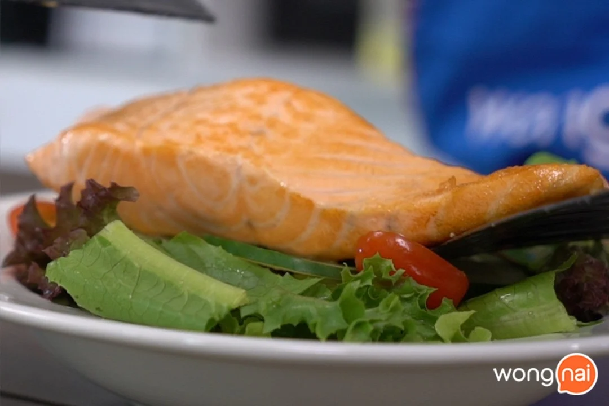

สลัดแซลมอนแซ่บ
168 Kcal/เสิร์ฟ
หลายคนอาจจะกังวลเรื่องการทานอาหาร กลัวว่าจะได้รับผลจากอาหารที่ทาน
วันนี้เลยจะพาคุณเข้าครัวทำเมนู “สลัดแซลมอนแซ่บ” พร้อมสูตรน้ำสลัดซีฟู้ด
เพราะแซลมอนเป็นแหล่งอาหารที่มีโปรตีนสูงและมี DHA ที่ช่วยบำรุงสมอง และสายตา

วัตถุดิบเมนู สลัดแซลมอนแซ่บ
วิธีทำ “สลัดแซลมอนแซ่บ” เมนูสลัด พร้อมสูตรน้ำสลัดซีฟู้ด
วัตถุดิบสำหรับทำสลัด
1. แซลมอนสด 300 กรัม
2. กรีนโอ๊ก 3 ใบ
3. เรดโอ๊ก 3 ใบ
4. ฟิลเล ไอซ์เบิร์ก 3 ใบ
5. ผักคอส 3 ใบ
6. แตงกวาญี่ปุ่น 1 ลูก
7. มะเขือเทศราชินี 5 ลูก
วัตถุดิบสำหรับทำน้ำสลัด
1. น้ำสลัดครีมญี่ปุ่น 5 ช้อนโต๊ะ
2. พริกขี้หนูสวนสับละเอียด 5 เม็ด
3. ผักชีสับละเอียด 1 ต้น
4. น้ำมะนาว 3 ช้อนโต๊ะ
5. น้ำปลา 2 ช้อนโต๊ะ
6. น้ำตาลปี๊บ 1 ช้อนโต๊ะ
ลงมือโล้ดดดดดดดด!
STEP 1 : เตรียมน้ำสลัด
- นำน้ำมะนาว น้ำปลา น้ำตาลปี๊บใส่ลงในชามผสม ตามด้วยพริกขี้หนูสวนสับละเอียด และผักชีสับละเอียด
จากนั้นคนให้ส่วนผสมเข้ากัน
- นำน้ำสลัดครีมผสมลงไปในน้ำจิ้มซีฟู้ด แล้วคนให้ส่วนผสมเข้ากันเป็นเนื้อเดียว แล้วพักไว้เตรียมจัดเสิร์ฟ


คนให้ส่วนผสมเข้ากัน นำน้ำสลัดครีมผสมลงไปในน้ำจิ้มซีฟู้ด
STEP 2 : เตรียมแซลมอน + ย่างแซลมอน
- นำแซลมอนที่เราซื้อมาซับด้วยกระดาษทิชชู่แทนการล้างด้วยน้ำเปล่า เพราะแซลมอนที่แล่แล้วไม่ควรล้างน้ำ
จะทำให้แซลมอนคาวค่ะ
- ตั้งกระทะโดยใช้ไฟปานกลางค่อนอ่อน ทาน้ำมันพืชลงไปในกระทะ รอให้กระทะร้อนค่อยนำแซลมอนลงไปย่าง
เมื่อแซลมอนสุกแล้วนำขึ้นพักไว้เตรียมจัดเสิร์ฟ
Tip… เราจะใช้แปรงในการทาน้ำมันให้ทั่วกระทะแบบบาง ๆ โดยเราจะใช้น้ำมันในการย่างแซลมอนไม่เยอะค่ะ
เพราะจะกลายเป็นการทอดแซลมอนมากกว่าการย่างค่ะ


นำแซลมอนที่เราซื้อมาซับให้แห้ง นำแซลมอนลงไปย่าง
STEP 3 : จัดเสิร์ฟ
- นำกรีนโอ๊ก เรดโอ๊ก ฟิลเล ไอซ์เบิร์ก ผักคอส แตงกวาญี่ปุ่น มะเขือเทศราชินี หอมแขกหั่นแว่น
และแซลมอนย่างจัดเสิร์ฟลงในจาน เสิร์ฟพร้อมน้ำสลัดแซ่บ เท่านี้คุณแม่ก็ฟินแล้วจ้า

นำแซลมอนย่างจัดเสิร์ฟลงในจาน